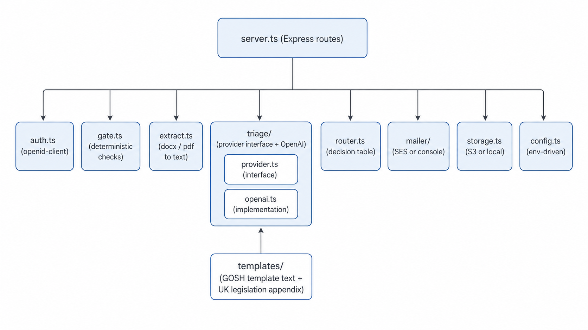
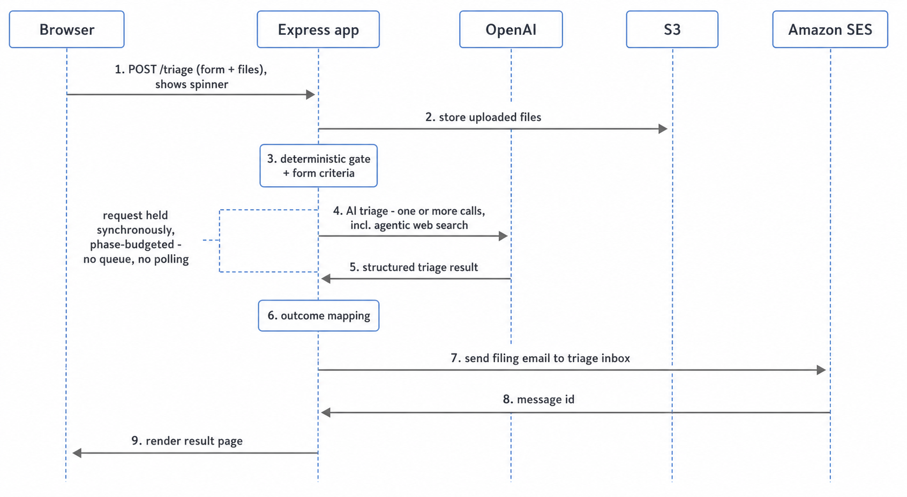
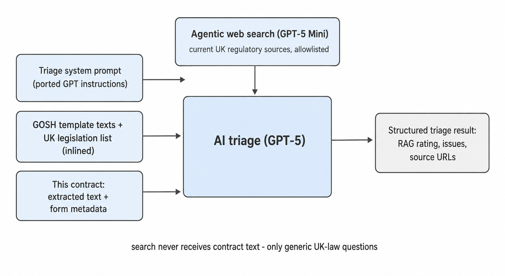

Software implementation - May 2026
The companion to the architecture deck. This one is how the app is actually built: one TypeScript service, server-rendered pages, no front-end build step. Small enough to read in one sitting.
The guiding rule throughout: the AI sits in the middle, wrapped by plain, testable code. The two pieces that decide anything - the gate and the outcome mapping - are ordinary functions with unit tests.

server.ts wires up
Express
routes. Everything else is a small focused module:
auth.ts - login and sessionsgate.ts - the deterministic checksextract.ts - Word / PDF to texttriage/ - provider interface + OpenAIrouter.ts - the decision tablemailer/ - SES or consolestorage.ts - S3 or local diskconfig.ts - env-driven configtemplates/ holds the GOSH template text and the UK
legislation appendix - plain text files, version-controlled.

A submit is one held request. The result page renders only after the filing email is accepted.
The triage may make one or more model calls, including the agentic search, so the work is phase-budgeted:
If the search phase runs out of budget, the run continues and routes to Legal review rather than failing.
Pure functions, no AI, no I/O beyond reading the upload. It either returns a list of plain errors for the form, or a clean validated object for the next stage.
type GateResult =
| { ok: false; errors: string[] }
| { ok: true; meta: ContractMeta; text: string; tooLargeToAnalyseFully: boolean };
function gate(form: RawForm, files: UploadedFile[]): GateResult {
const errors = [
...checkRequiredFields(form),
...checkValueParses(form.totalValue),
...checkFileTypesAndSizes(files), // .pdf / .docx, count + MB limits
];
if (errors.length) return { ok: false, errors };
// extract.ts; rejects encrypted or scanned-image-only PDFs
const text = extractText(files);
return { ok: true, meta: toMeta(form), text,
tooLargeToAnalyseFully: overTokenBudget(text) };
}A document over the token budget is not rejected - it is flagged, carried forward, and the router refuses to auto-approve it. Auto-approval never runs on text the AI could not see in full.

One interface, one method:
interface TriageProvider {
triage(input: TriageInput):
Promise<TriageResult>;
}OpenAITriageProvider assembles the prompt, runs
GPT-5 for the triage reasoning and GPT-5 Mini
for the agentic search, and parses the reply - via
Structured Outputs
plus Zod validation - into a typed
TriageResult.
Provider-specific code, including the search, stays inside that one file. A fixture-based contract test guards the shape.
The decision from the architecture deck, as one small pure function. This is the most important code in the app, so it is the plainest.
function decideOutcome(form: FormCriteria,
t: TriageResult): Outcome {
// form-driven criteria - straight to Legal
if (form.personalData !== "no") return "legal_review";
if (form.valueOverThreshold) return "legal_review";
// operational fallbacks
if (!t.valid) return "legal_review"; // after retries
if (t.documentTooLarge) return "legal_review";
// the AI RAG rating maps through
if (t.rating === "red") return "reject";
if (t.rating === "amber") return "legal_review";
return "auto_approve"; // green only
}Personal-data "yes" and "not sure" both route to Legal. A
Green rating is the only path to auto-approve - and "Green" is a checklist the
triage prompt enforces (template match, value/term consistent with the form, clean
extraction), so the form-versus-document cross-check lives in the prompt, not here.
Every branch is covered by a Vitest unit test.
extract.ts uses
mammoth
for Word and
pdf-parse
for PDF. Auto-approve needs every file to extract cleanly: encrypted,
image-only, tracked-changes, or low-text-density files route to Legal review
rather than being trusted.
Uploads arrive as multipart form data; a size limit is enforced before anything is read into memory.
One run sends exactly one email to the triage inbox
(contractreview@gosh.org). There is no database; the inbox is the audit
trail. So each email is a complete, self-contained filing bundle:
| Original uploaded files, attached | Full AI triage output |
| Form metadata + the final outcome | Search source URLs used |
| Run ID + a hash of each file | Prompt / template / model version IDs |
The send is on the success path: the result page
does not render until SES has accepted the email and returned a message id,
which goes on the result page and into the log. mailer/ has two
implementations - SES (v2) for AWS, console for local dev. Filing is
at-least-once.
CloudWatch gets a matching log line keyed by the same run ID and message id - never the contract text.
auth.ts does not hand-write token crypto. The maintained
openid-client
library does the OIDC exchange and verification; the app code is small:
// after openid-client verifies the id_token from Microsoft Entra:
req.session = signSession({ email, name, exp: now + 8h });
// requireAuth middleware on every route except /login and /callback:
function requireAuth(req, res, next) {
const s = readSignedSession(req);
if (!s || s.exp < now()) return res.redirect("/login");
res.locals.user = s; next();
}The session is a signed cookie (Secure, HttpOnly, SameSite=Lax). A single-tenant Entra registration means only GOSH accounts can sign in. All POSTs carry a CSRF token.
| What | Where | Notes |
|---|---|---|
| OpenAI API key, Entra client secret | Secrets Manager (AWS) / .env (local) | Read once at startup |
| Spend threshold, value bounds | Environment variable | CONFIG not hard-coded |
Triage inbox address (contractreview@gosh.org) | Environment variable | CONFIG placeholder |
| Max AI retries, search iterations, phase time budgets | Environment variable | CONFIG placeholders |
| Storage / email / secrets backend | One env var: aws or local | Selects the implementation |
config.ts reads the environment once, validates
it, and fails fast at startup if something required is missing. The rest of the app
receives a typed config object - it never reads process.env directly.
decideOutcome, including the form-criteria,
malformed-output and too-large branches.The deterministic stages are where bugs would silently mis-route a contract, so that is where the tests concentrate. The AI's quality is judged by Matthew and Emma against real contracts, not by unit tests.
npm install
cp .env.example .env # keys
npm run dev # localhostStorage is a local folder; email prints to the console; secrets
come from .env. A real OpenAI key is the only external thing needed.
One Dockerfile. The only build step is tsc -
TypeScript to JavaScript. No bundler, no front-end build.